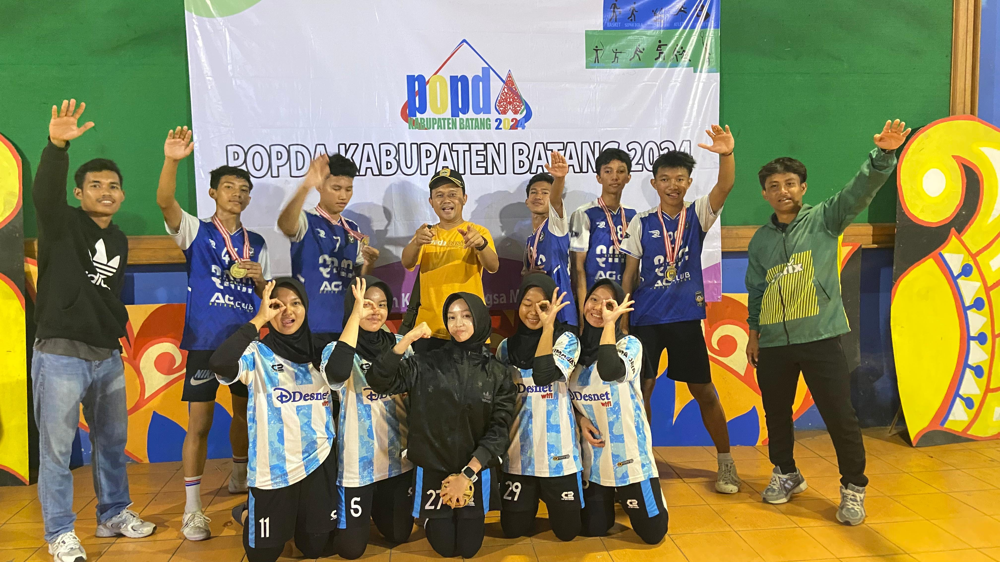
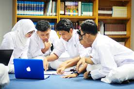
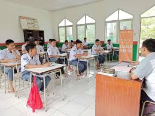
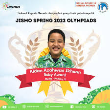
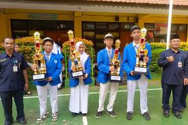
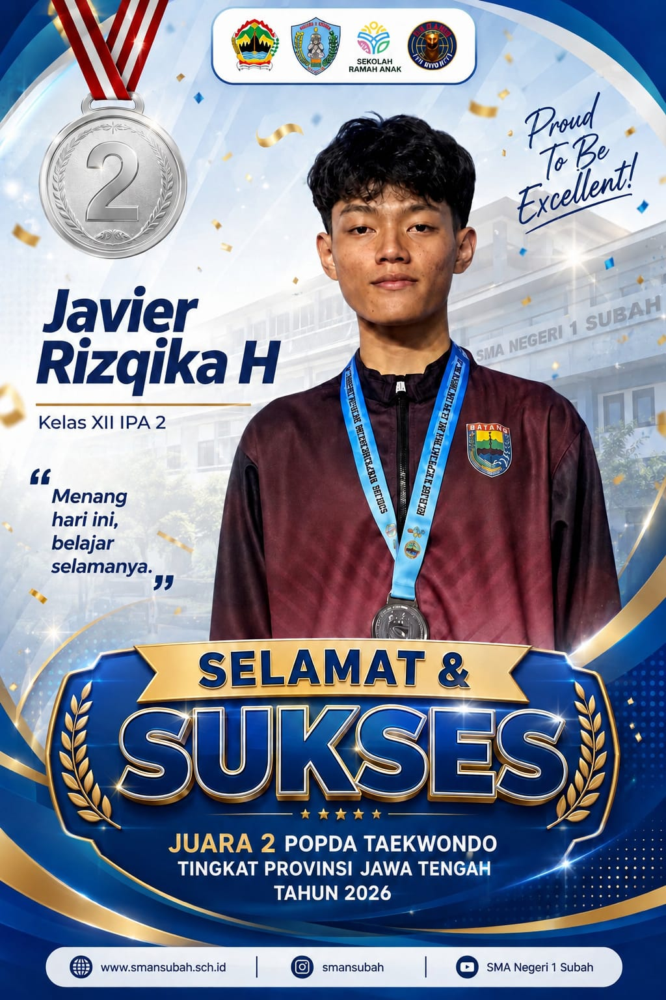
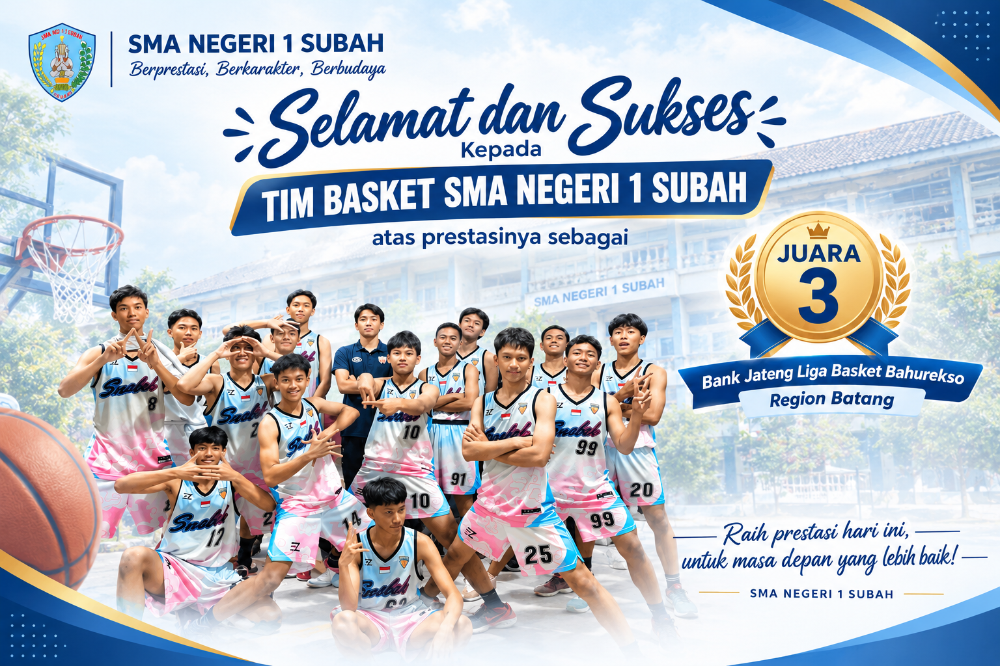

Pusat informasi kegiatan siswa, organisasi, galeri dokumentasi, karya, dan prestasi.
Organisasi Siswa Intra Sekolah (OSIS) dan Majelis Perwakilan Kelas (MPK) SMA Negeri 1 Subah merupakan wadah utama kepemimpinan murid untuk menyalurkan aspirasi, melatih berorganisasi, serta menggerakkan berbagai kegiatan positif di lingkungan sekolah.
Berperan sebagai eksekutor program kerja kesiswaan, event sekolah, dan pengembangan minat bakat harian siswa.
Berperan sebagai lembaga legislatif sekolah yang mengawasi kinerja OSIS serta menampung aspirasi seluruh warga sekolah.
Momen seru dan dokumentasi kegiatan harian, upacara, hingga event besar sekolah.

Ekstrakurikuler dan Prestasi

Suasana Belajar Kolaboratif

Suasana belajar di kelas
Berbagai hasil inovasi digital, produk kewirausahaan, serta deretan piala kejuaraan yang diraih oleh siswa-siswi kita:

Prestasi akademik siswa dalam kompetisi matematika tingkat provinsi.

Penghargaan atas komitmen sekolah dalam budaya lingkungan dan kebersihan.

Peraih: Javier Risqika H (XII IPA 2)
Ajang: POPDA Taekwondo Tingkat Provinsi Jawa Tengah
Tingkat: Jawa Tengah

Peraih: Tim Basket SMA Negeri 1 Subah
Ajang: Bank Jateng Liga Basket Bahurekso Region Batang
Tingkat: Region Batang